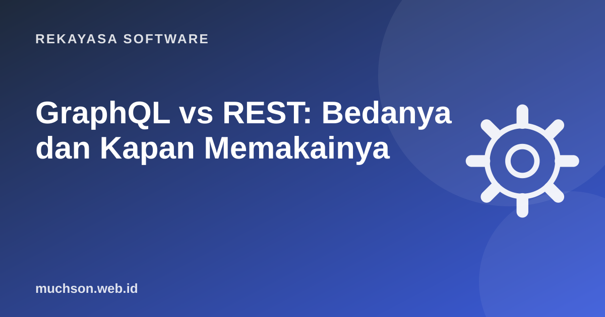

Beranda › Artikel › Rekayasa Software
Rekayasa SoftwareGraphQL vs REST: Bedanya dan Kapan Memakainya
GraphQL sering diperkenalkan sebagai "pengganti REST". Kenyataannya lebih menarik: GraphQL menyelesaikan masalah tertentu dengan sangat baik, tetapi membawa kerumitan baru. Artikel ini membandingkan keduanya dengan contoh yang sama agar Anda bisa memilih dengan sadar.

Masalah yang ingin diselesaikan GraphQL
Bayangkan halaman profil di aplikasi mobile butuh: nama pengguna, tiga pesanan terakhir, dan nama produk tiap pesanan. Dengan REST klasik:
GET /users/7 → 30 field, padahal butuh 2 (over-fetching)
GET /users/7/orders → semua pesanan, padahal butuh 3
GET /products/101 → satu per satu untuk tiap produk (under-fetching)
GET /products/205
GET /products/318Dengan GraphQL, klien menulis satu query yang menyebutkan persis data yang dibutuhkan:
query {
user(id: 7) {
name
orders(last: 3) {
total
items { product { name } }
}
}
}Server menjawab dengan bentuk JSON yang sama persis dengan query. Satu permintaan, tanpa field berlebih.
Bagaimana GraphQL bekerja di server
# Skema: kontrak antara klien dan server
type User {
id: ID!
name: String!
orders(last: Int): [Order!]!
}
type Order {
id: ID!
total: Int!
items: [OrderItem!]!
}
type Query {
user(id: ID!): User
}Perbandingan langsung
| Aspek | REST | GraphQL |
|---|---|---|
| Endpoint | Banyak URL | Biasanya satu (/graphql) |
| Bentuk data | Ditentukan server | Dipilih klien |
| Caching HTTP | Mudah (GET + URL unik) | Perlu strategi khusus (persisted query, cache klien) |
| Kontrak | OpenAPI (opsional) | Skema wajib dan bertipe |
| Upload file | Sederhana | Butuh spesifikasi tambahan |
| Kurva belajar | Rendah | Lebih tinggi |
| Status error | Kode status HTTP | Sering 200 dengan array errors |
Jebakan yang perlu diketahui
Kapan memilih yang mana?
Banyak perusahaan memakai keduanya: REST untuk API publik dan webhook, GraphQL sebagai lapisan untuk aplikasi frontend mereka sendiri.
Tanya jawab
Apakah GraphQL lebih cepat dari REST?
Library apa yang dipakai?
Apakah GraphQL butuh database khusus?
Sumber dan bacaan lanjut
- GraphQL.org: Learn GraphQL
- GraphQL.org: Best Practices (pagination, caching, authorization)
- DataLoader (GitHub graphql/dataloader)